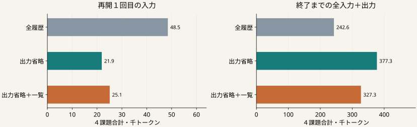

ハーネスが、AIへ渡す情報・ツール実行・状態・検証・停止を制御する。
同じ長い出力の再入力。
省略した情報の再取得。
それに伴う追加のAI呼出し。
要求・操作・失敗の記録。
必要な値と元資料へのアクセス。
要求を満たす最終成果。
後続上限：16生成・12万総トークン・480秒。元のAPI上限と共通前半を計上。
４既知課題×３条件×各１試行。全履歴の対照も新しく実行。整理・一覧の費用も含める。

| 条件 | 最終成功 | AI呼出し | 後続API | 使用量不明 |
|---|---|---|---|---|
| 全履歴 | 2/4 | 18 | 162 | 0呼出 |
| 出力省略 | 2/4 | 39 | 133 | 0呼出 |
| 出力省略＋一覧 | 2/4 | 29 | 150 | 0呼出 |
| 課題 | 全履歴 | 出力省略 | 出力省略＋一覧 |
|---|---|---|---|
| 写真整理 | 成功 | 成功 | 成功 |
| 共有・依頼 | 未達 | 未達 | 未達 |
| 返金 | 成功 | 成功 | 成功 |
| 曲一覧の書出 | 未達 | 未達 | 未達 |
出力省略：対照の成功を落とした課題 0件。総トークン差 +134,632。
出力省略＋一覧：対照の成功を落とした課題 0件。総トークン差 +84,629。
書出は全履歴がAPI上限、他２方式がトークン上限で未達。
早く打ち切られた低費用を、効率よく完了した結果とは扱わない。
今回の２つの省略条件は、開発用の採否基準を満たさなかった。
出力省略と変数一覧は既存の仕組み。
結果が良くても、それだけを新規性とはしない。
値との照合だけで省略を選ぶ候補（P34）は、対象23出力中１出力にしか適用できず、追加のモデル比較を見送った。
次は、コードが参照した情報とAPI返却の対応を、保存記録の再生で調べる。読み取りの記録がないことを、不要だとは判定しない。
| 条件 | 総入力 | キャッシュ入力 | 新規入力処理 | 出力 |
|---|---|---|---|---|
| 全履歴 | 233,888 | 176,340 | 57,548 | 8,752 |
| 出力省略 | 366,134 | 322,808 | 43,326 | 11,138 |
| 出力省略＋一覧 | 315,583 | 264,881 | 50,702 | 11,686 |
総入力には、再利用されたキャッシュ部分も含む。
小さい入力、少ないAPI、短い実時間は別の指標。
使用量が不明な呼出しは、この内訳の外にある。
再構成、制御、失敗を含む詳細は元の集計とCSVへ残した。